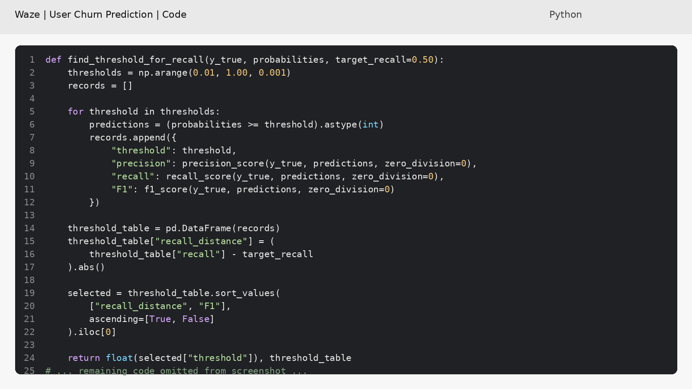

02 · Retention analytics case study
Waze User Churn
Churn prediction where the important decision is how aggressively to prioritize users for retention.

14,299labeled users
17.74%churn rate
52.47%test recall at 0.223
0.7318test ROC AUC
01 · The problem
Start with the question the client actually needs answered.
The retention question is whether behavioral data can identify users who may be at higher risk of churn early enough to prioritize a retention workflow.
Key findingActivity days were the strongest feature in the XGBoost model. The model contained useful ranking signal, but the available behavior data was not enough to identify all churners reliably.
What this meansThe threshold changes the practical meaning of the model. A lower threshold catches more likely churners but also flags more users who may not churn.



02 · Evidence and approach
The technical work is here to support the answer, not replace it.
XGBoost was selected from the ensemble models using validation recall. At the frozen 0.223 threshold, test recall increased to 52.47% and F1 to 42.66%, while precision fell to 35.95% and accuracy to 75.00%.
What I checkedData quality, exploratory patterns, evaluation behavior, and the evidence behind the main conclusion.
How I evaluated itModel selection and final reporting were separated from the held-out test results wherever the notebook workflow allowed.
Why it mattersThe result is interpreted in terms of what a client can do next, not only which algorithm scored highest.
03 · Final analysisKey findingActivity days were the strongest feature in the XGBoost model. The model contained useful ranking signal, but the available behavior data was not enough to identify all churners reliably. Business impactThe threshold changes the practical meaning of the model. A lower threshold catches more likely churners but also flags more users who may not churn. Recommended actionUse the model to prioritize a retention list, then choose the threshold according to the actual cost of outreach and the value of catching an additional churner. Measure whether the retention action itself improves outcomes.
What did the analysis actually answer?
This is the part a busy client can skim in 30 seconds.
Client takeaway
What I would want the client to remember.
The model is most useful as a ranking tool for a retention workflow. The 0.223 threshold shows how recall can be improved, but the right operating point depends on the real cost of outreach and the value of catching another churner.
04 · Limitations and next steps
What the result can support, and what I would do next.
Limitations
The 0.223 threshold is an example operating point selected from validation data, not a production recommendation. Predictions are risk estimates, not statements that a user will definitely churn.
What I would do next
- Define the financial or operational cost of false positives and missed churners.
- Add richer behavioral history and engagement signals.
- Run a controlled retention experiment to measure whether flagged users actually respond to intervention.
Client takeaway
Use the model to prioritize a retention list, then choose the threshold according to the actual cost of outreach and the value of catching an additional churner. Measure whether the retention action itself improves outcomes.